Home
本彩笔第一次写知乎，之后慢慢写哈
- 在任意地址下创建一个文件夹，例如testforgit
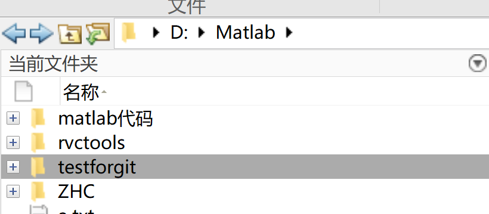
- 同步进行一项操作，在github上新建一个仓库，名字最好和上一步文件夹名字一样
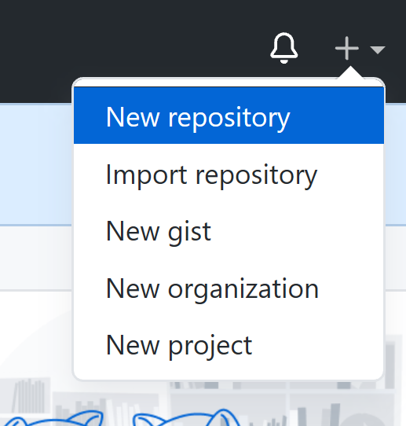
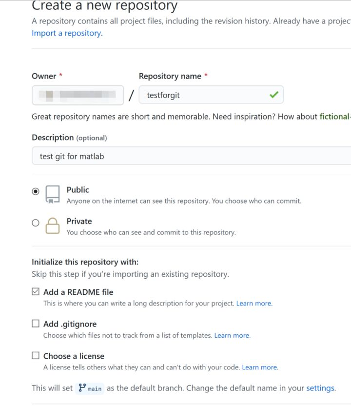
- 双击进入第一个步骤中的testforgit文件夹，右键单击“当前文件夹”的空白部分，点击源代码管理——管理文件，跳出如下方框；
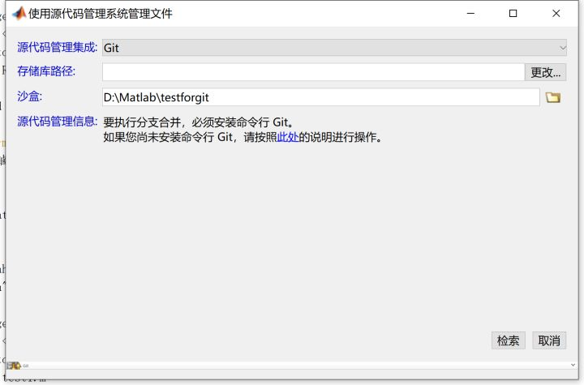
重新打开github新建的仓库网页，如下图所示复制仓库地址链接，并将地址粘贴到上图中的存储库路径上，可以点击“更改”——“验证”检查是否为有效路径，是有效路径就正确。
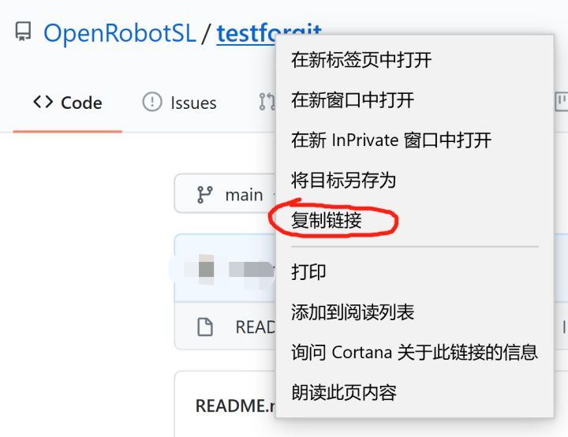
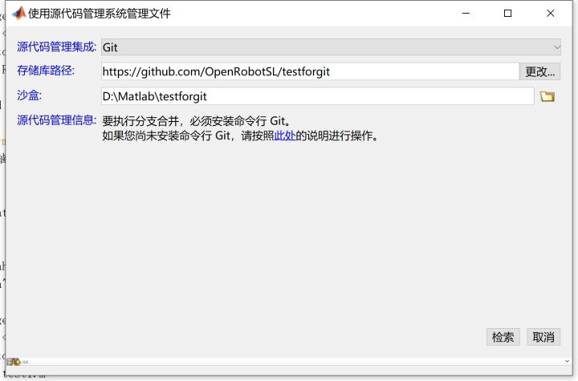
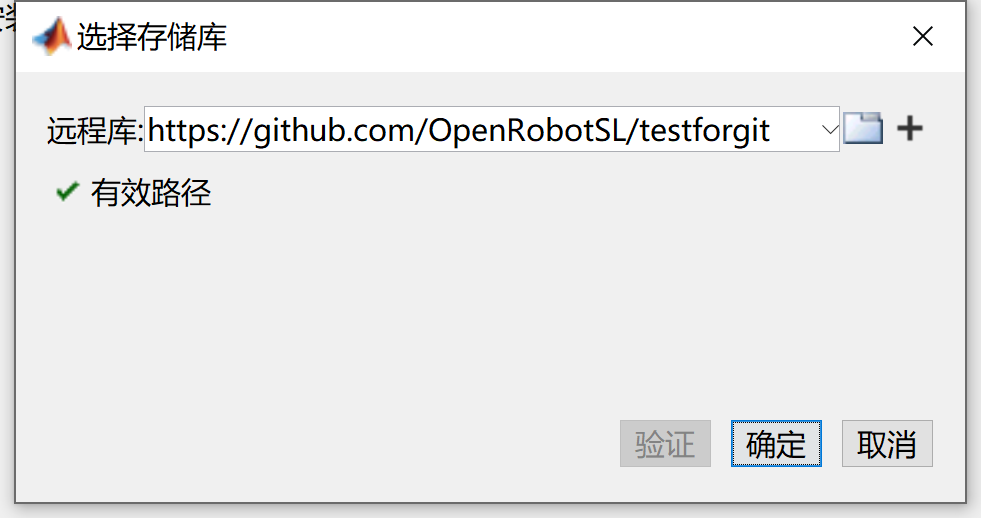
点击“检索”后会看到testforgit文件夹中出现如下东西，这说明和本地与远程仓库连接了，可以从本地仓库向远程提交代码。
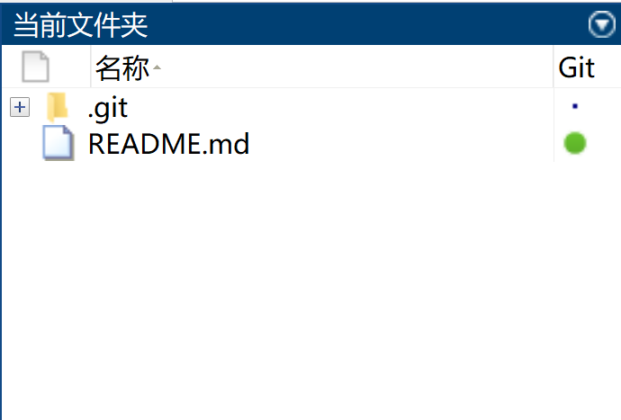
- 在本地仓库中新建文件夹以及代码文件，随意即可。
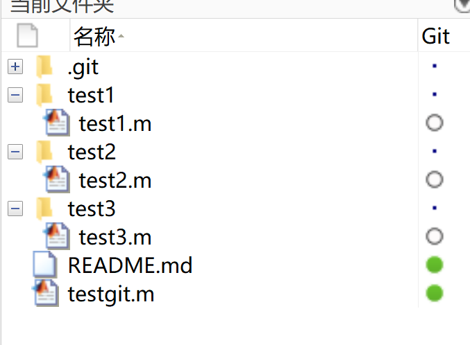
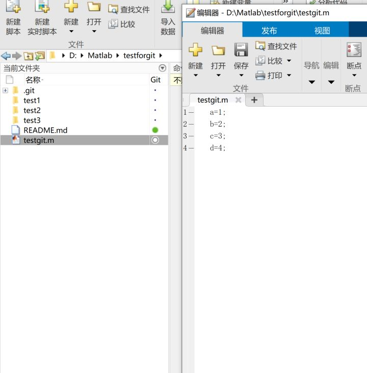
如上图所示，保存后，在命令行中输入如下命令进行代码提交更新：
!git status
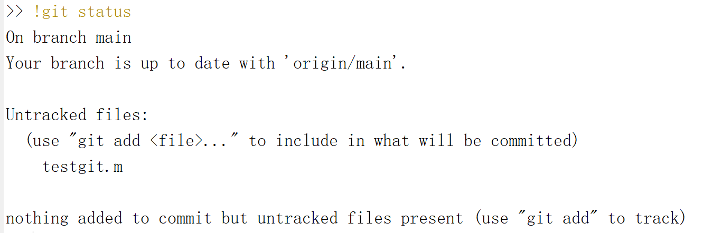
提示本地分支要领先于远程分支，需要增加文件，输入如下命令：
!git add .
!git commit -m “这里填写评论（做了哪些修改）”
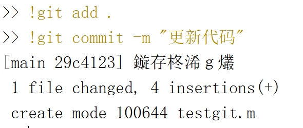
先将远程的代码pull下来，看是否有冲突
!git pull
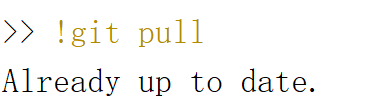
没有冲突就直接把本地分支的代码push到远程分支上
!git push
这时会跳出界面要求输入github账号和密码，填写即可。成功后会提示如下
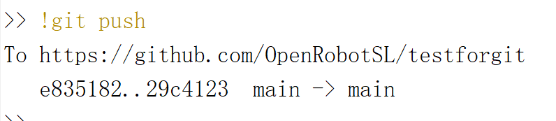
此时打开github远程仓库，刷新一下界面就可以看见远程更新了。
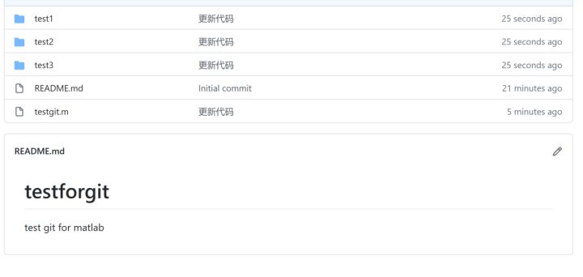
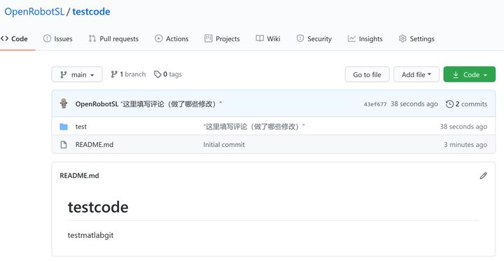
删除：
在setting中
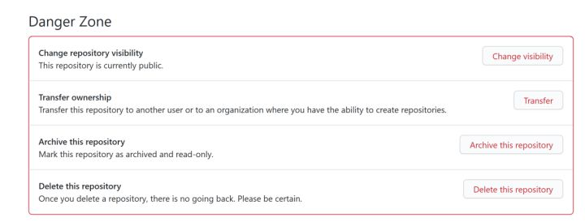
最后一行就是了！
======================================================================
我的测试结果及程序
下面是我测试的代码：